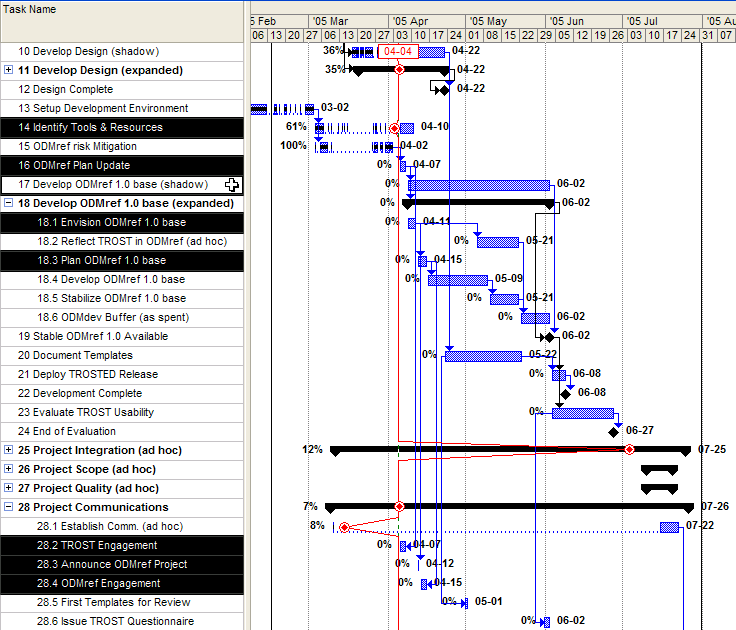
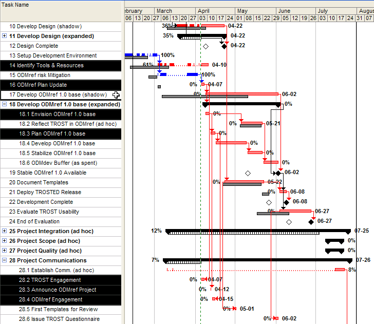

P050402c>
2013-08-22
-12:47 -0700
|
|
|
The project for initial ODMref 1.0 development is embedded in the TROST Pilot project. The ODMref 1.0 project tracking covers only those TROST Pilot activities having some bearing on ODMref 1.0 development.
Table 1. ODMref 1.0 Development-related Tasks: 2005-04-05
Replan [version 6.3]
[identified tasks are from the the Work Breakdown
Structure produced in the ODMref Plan Update task]

Table 2. ODMref 1.0 Development-related Tasks: 2005-04-05
Replan Tracking [plan version 6.3]


|
You are
navigating the ODMA Interoperability Exchange. |
created 2005-04-09-10:53 -0700 (pdt) by
orcmid |